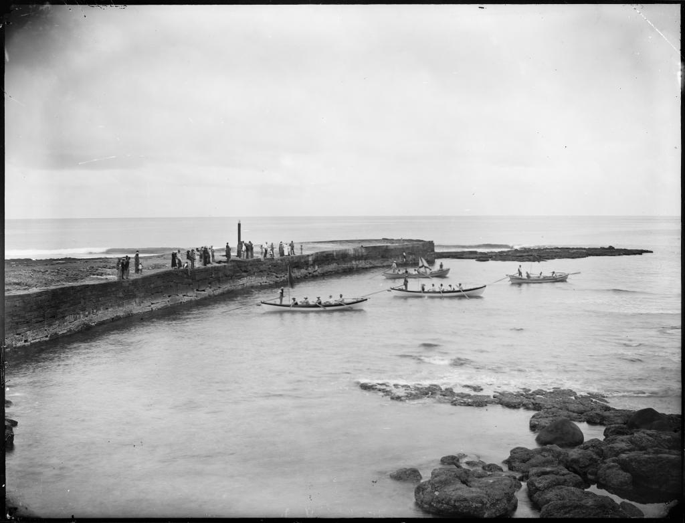
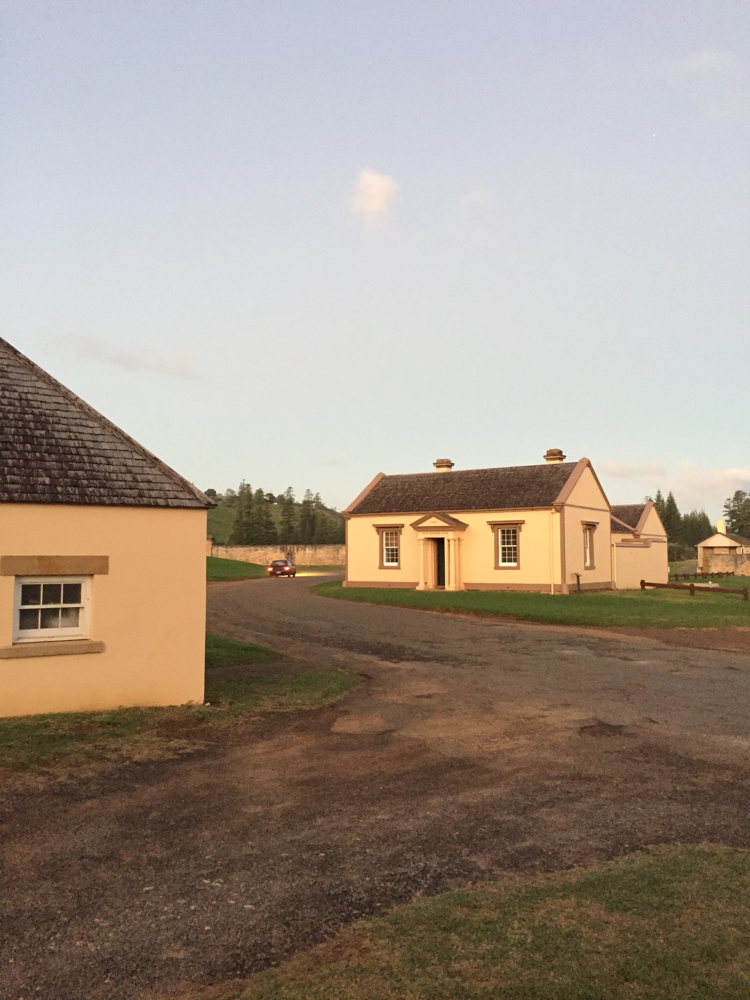

Description
KAVHA
Kingston and Arthurs Vale Historic Area (KAVHA) is situated on the southern side of Norfolk Island fronting Slaughter Bay. Referred to as KAVHA it is a cultural landscape which includes an agrarian landscape (Arthurs Vale, Watermill valley and the northern hillsides) and the settled coastal plain at Kingston. Hills to the north and west fringe the settlement on the coastal plain. Roads provide ways through KAVHA, linking the groups of structures, access to the landing place, the foreshore, the cemetery and bridges. The Kingston plain is Norfolk's only coastal plain area with beach, dune and a coral edged lagoon.
Gaol
The convict barracks and gaol were located on the foreshore. Swampy land, once upon a time, separated the convict accommodation from the military and civil accommodation arranged on the inland side of the coastal flat while a succession of Government houses were positioned in commanding locations, through Norfolk Island. The many surviving buildings at the site reflect the arragnement of the buildings on Norfolk island.The image which you can see below of the jail, is just one example of the many historic buildings which can be found on norfolj island. As you can see, although there has been human colonisation, the island and its natural environment remain mostly uninhibited.With this being the case, Norfolk island is most widely known for its pine trees, in fact it is the primary component of Norfolk Islands flag, in a white vertical strip with a green vertical stripe on either side.

Landscape
The cleared nature of the landscape, along with the siting and orientation of important buildings are an explicit demonstration of the settlement and penal philosophy of the British Empire in colonial Australia, being designed to provide for the continual surveillance of convicts and allow for agricultural requirements. Modification to the landscape through earthworks to facilitate the construction of buildings or protect agricultural plots (the 'causeway') and the large scale quarrying of limestone and the coral reef, illustrate attitudes to landscape based primarily on its value as a resource. Surviving evidence also illustrates aspects of design and process from the First and Second Settlements. This includes the remnant serpentine landscape and ornamental garden of Government House, the formal streetscape qualities of Quality Row, and evidence of communications through maintaining visual links and operation of a semaphore system. Evidence from the Third Settlement period is the introduction of new plant species, swamp drainage works, memorial plantings and reforestation to address erosion on the hill slopes. Due to the relevatively untouched nature of Norfold Island, many of these buildings can still be observed to be standing and in tact, although some may be somewhat erroded over the years by the salty air the high winds which can oftern be experienced on norfolk island.
Archeology
KAVHA is rare, being the site of, and probably containing extensive archaeological evidence of the earliest European settlement from Australia to the south-west Pacific (1788), similar in size for a decade to the other initial settlement at Sydney Cove. Its significance is enhanced by the lack of substantial subsequent development. It contains areas and individual elements that are confirmed or well documented sites of First Settlement buildings and activities (1788-1814). The subsurface archaeological remains of the first and second Government Houses (1788-1803) are, along with First Government House Sydney (1788-1847), the oldest government house sites in Australia.

Historic Beauty
The concentration and intactness of fabric is considered rare. The intact layout, form and fabric of the place illustrate the patterns of human occupation, ways of life, and perceptions and values of the landscape, and accumulative impact of Europeans on a pristine natural environment (Australian Construction Services, 1994).
Other Historical Structures
KAVHA is significant for its richness of settlement history and array of extant features. It contains areas, buildings and other elements of outstanding individual cultural significance including Government House (1829), one of the earliest and most intact remaining government house buildings in Australia, along with Old Government House Parramatta, and the Old Military Barracks (now the Legislative Assembly and Norfolk Island Court) (1829). The Old Military Barracks, together with the Commissariat Store and the New Military Barracks (now Norfolk Island Government Administration offices) (1836), form a group of buildings which is the most substantial military barracks complex in Australia dating from the 1830s. The Commissariat Store (now All Saints Church) (1835) is one of the finest remaining colonial (pre 1850) military commissariat stores in Australia along with that at Darlington (Tasmania). The soldiers' barracks is one of the finest military barrack buildings built in Australia in the nineteenth century.
There are nine houses providing quarters for military and civil officers (1832-47). Other features include: perimeter walls and archaeological remains of Prisoners' Barracks (1828-48) including the Protestant Chapel; perimeter walls and archaeological remains of the New Prison (Pentagonal Prison) (1836-40, 1845-57); ruins of the hospital, built on First Settlement remains (1829); the Surgeon's Quarters and Kitchen (1827) on the site of First Settlement Government House, one of the earliest European dwellings in Australia; the Landing Pier (1839-47) built over the First Settlement landing place and sea wall, two of the earliest remaining large scale engineering works in Australia; Beach store (1825); Settlement Guardhouse (1826) on the foundations of First Settlement building; Crankmill (1827-38), the remains of the only known human powered crankmill built in Australia before 1850; Royal Engineer's office and stables (1850); Double Boat Shed (1841); Police Office, now boatshed (1828-29); Flaghouse (1840s); Constable's Quarters, partly standing (1850-53); Blacksmith's Shop (1846); Salt House (1847); and Windmill base (1842-43).
The Cemetery has an outstanding collection of headstones and other remains dating from the earliest period of European settlement, including the first and second penal settlement periods and the Pitcairn period with associations with the Bounty, set in an evocative and picturesque historical landscape. Many stone walls, wells, drains, building platforms, bridges, culverts, roads, quarry sites, privies and archaeological sites of former buildings are important remains. These include Bloody Bridge. The remnant serpentine landscape is an outstanding example of colonial period (pre-1850) attitudes to landscape design in Australia which reflected contemporary English attitudes to landscape design.
The place is particularly infamous as one of two places of secondary punishment within the Australian colonies (the other being Port Arthur). Its reputation was renowned throughout the British Empire to act as a deterrent to further convict crime in the colonies. It is also associated with an experiment in penal reform in the NSW colony which underpinned modern approaches to penal practice internationally. It has an association with Australia's founding and early personalities such as King, Hunter, Foveaux, Wentworth, Anderson, Maconochie, Price and Cash. It is also associated with the 1790 wreck of HMS Sirius, the flagship of the First Fleet and the only sizable warship available to defend the colony which was about to sail to China to obtain desperately needed food supplies for the colony at Sydney Cove (Australian Construction Services, 1994).
The place is rich in aesthetic qualities due to the combination of spatial structure, visual quality and the strong relationship between built elements and their setting. Apart from visual quality, the places is a rich source of other sensory stimuli; the sounds, tastes and textures are all products of the friction wrought between such natural elements as wind, water and sun. Oceanic influences render the natural lighting of the place very changeable over a day, and dramatise the scene. The combination of cultural expression, natural forces and their resultant patterns enable a perception and interpretation of the place as a 'picturesque' and 'romantic' landscape made up of a number of elements including natural/built edges, sea/landscape vistas, gardens, rural pastures, cleared hills and formal plantings (Australian Construction Services, 1994).
The Sirius wreck (1790) remains on the seabed off the reef in Slaughter Bay. The first anchor raised was in 1903. Artefacts have been recovered from the wreck, some of which form part of the collection housed in the Norfolk Island Museum. The artefact collection, in combination with a detailed written record, has outstanding research potential for information about the lives of the bond and free in the early convict period. Other relics, including two of the Sirius anchors are on the mainland. The large anchor is displayed in Macquarie Place, Sydney and another is in the Maritime Museum in Sydney.
The low-lying land of KAVHA is generally composed of calcarenite, a limestone formed of cemented cross-bedded calcareous sand, the remnants of a formerly much more extensive coral formation (Tropman and Tropman 1994). The dunes behind Emily Bay and Cemetery Beach contain a number of small fossil and sub-fossil deposits of recent age (between 450 and 7 000 years BP). These sites have yielded some fossilised vertebrate bones, remains of several land snail species that are now considered to be extinct or extremely rare, and fossilised seeds and logs of the Norfolk Island Pine (Tropman and Tropman 1994; Anderson and White 2001; DEH 2005). These fossils provide evidence of plant and animal life that existed on Norfolk Island before human occupation.
Most of KAVHA has been cleared and the original vegetation severely modified. Tropman and Tropman (1994) describe it as dominated by Kikuyu grass and note that while the sheltered gullies contain some remnant ferns, mixed hardwoods and white oaks, they have been colonised by weed species such as olives and lantana. KAVHA may still support a small population of a rare landsnail (Mathewsoconcha suteri).